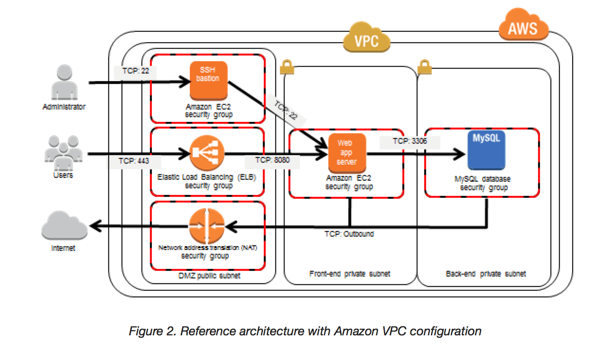
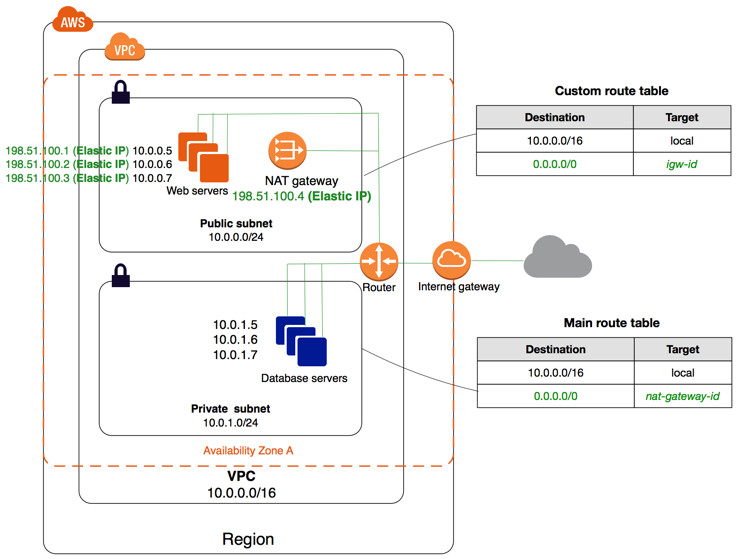

Test Report
Review questions
Jun 17, 2019 04:28AM EDT
 10 correct
10 correct 55 incorrect
55 incorrectYour answer
B. Create a VPC instance, which will have multiple network interfaces with multiple elastic IP addresses.
C. You have to launch two instances each in a separate subnet and allow VPC peering for a single IP.
D. Create a VPC instance, which will have multiple subnets attached to it and each will have a separate IP address.
Correct answer is B as it is a single application multiple ENI can be attached to the instance with different IP address and SSL certificates associated with it.
Refer AWS documentation - EC2 Multiple IP Address
Host multiple websites on a single server by using multiple SSL certificates on a single server and associating each certificate with a specific IP address.
Your answer
B. Physical security of hardware
C. Application authentication
D. Virtualization infrastructure
E. Guest operating systems
D. Virtualization infrastructure
Correct answer are B & D as the Virtualization infrastructure and the physical security of the hardware is AWS's responsibility. Customer is responsible for guest OS, VPC, security configuration and Application authentication.
Refer AWS documentation - AWS Shared Responsibility Model
Security and Compliance is a shared responsibility between AWS and the customer. This shared model can help relieve customer’s operational burden as AWS operates, manages and controls the components from the host operating system and virtualization layer down to the physical security of the facilities in which the service operates. The customer assumes responsibility and management of the guest operating system (including updates and security patches), other associated application software as well as the configuration of the AWS provided security group firewall.
Your answer
B. Use the Parameter section in the Cloud Formation template to nave the user input Access and Secret Keys from an already created IAM user that has me permissions required to read and write from the required DynamoDB table.
C. Create an Identity and Access Management Role that has the required permissions to read and write from the required DynamoDB table and reference the Role in the instance profile property of the application instance.
D. Create an identity and Access Management user in the CloudFormation template that has permissions to read and write from the required DynamoDB table, use the GetAtt function to retrieve the Access and secret keys and pass them to the application instance through user-data.
Correct answer is C as Role needs to be referenced in the instance profile property which is used by the application.
Refer AWS documentation - CloudFormation IAM Instance Profile
{
"Resources": {
"MyInstanceProfile": {
"Type": "AWS::IAM::InstanceProfile",
"Properties": {
"Path": "/",
"Roles": ["MyIAMRole"]
}
},
"Instance": {
"Type": "AWS::EC2::Instance",
"Properties": {
"IamInstanceProfile": {
"Ref": "MyInstanceProfile"
}
}
}
}
}
Your answer
B. Allow outbound traffic in the security group for port 80 to allow internet updates
C. The private subnet can never connect to the internet
D. Use NAT with an elastic IP
Correct answer is D as private instances cannot access Internet Gateway and would require a NAT instance or Gateway to download the patch.
Refer AWS documentation - VPC NAT Instance
You can use a network address translation (NAT) instance in a public subnet in your VPC to enable instances in the private subnet to initiate outbound IPv4 traffic to the Internet or other AWS services, but prevent the instances from receiving inbound traffic initiated by someone on the Internet.
Your answer
B. Standard Storage Class
C. Standard – Infrequent Access (IA)
D. Reduced Redundancy Class (RRS)
Correct answer is C as the data needs to accessed instantly only in the event of disaster recovery, which would be rare so Standard - Infrequent Access (IA) would be an ideal storage solution.
Refer AWS documentation - S3 Storage Classes
S3 Standard-IA is for data that is accessed less frequently, but requires rapid access when needed. S3 Standard-IA offers the high durability, high throughput, and low latency of S3 Standard, with a low per GB storage price and per GB retrieval fee.
Option A is wrong as S3 Glacier is a secure, durable, and low-cost storage class for data archiving, but does not provide immediate access to data.
Option B is wrong as Standard storage although provides instant access to the data is not a cost effective solution.
Option D is wrong as RRS does not provide high durability.
Your answer
B. Open up whichever port ELB uses in a security group and give the user access to that security group in a policy
C. Create a new IAM user who only has access to the ELB resources and delete that user when he has finished his work
D. Give them temporary access to your account for 24 hours only and change the password the next day
Correct answer is A as the best practice and recommended approach is to have a IAM role created with access to ELB services. This role can be assigned to the user for the time required and revoke once done.
Refer AWS documentation - IAM Best Practices
Delegate by Using Roles Instead of by Sharing Credentials - You might need to allow users from another AWS account to access resources in your AWS account. If so, don't share security credentials, such as access keys, between accounts. Instead, use IAM roles. You can define a role that specifies what permissions the IAM users in the other account are allowed. You can also designate which AWS accounts have the IAM users that are allowed to assume the role.
Points : 3 out of 3
Your answer
B. Send them with a timestamp
C. Using FIFO queues
D. Give each message a unique id
E. Use sequence information in the messages with Standard queues
E. Use sequence information in the messages with Standard queues
Correct answer are C & E as Standard queues do not guarantee ordering so you can either
Refer AWS documentation - SQS FAQs
Q: Does Amazon SQS provide message ordering?
Yes. FIFO (first-in-first-out) queues preserve the exact order in which messages are sent and received. If you use a FIFO queue, you don't have to place sequencing information in your messages. For more information, see FIFO Queue Logic in the Amazon SQS Developer Guide.
Standard queues provide a loose-FIFO capability that attempts to preserve the order of messages. However, because standard queues are designed to be massively scalable using a highly distributed architecture, receiving messages in the exact order they are sent is not guaranteed.
Your answer
B. Launch a NAT Gateway in the private subnet, change the default route to the NAT Gateway and attach a public EIP to the NAT Gateway Ensure external DNS resolution directs to the EIP address
C. Launch an internet-facing ALB with the EC2 instance as its endpoint. Ensure external DNS resolution directs to the ALB
D. Attach the EC2 instance to an Auto Scaling group in the private subnet. Ensure external DNS resolution directs to the Auto Scaling group.
Correct answer is C as Internet facing ALB can help expose the underlying EC2 instances with the external DNS pointing to the ALB.
Option A is wrong as instances in private subnet do not have an internet connectivity as they are not associated to the IGW.
Option B is wrong as NAT Gateway helps route traffic from private instances to internet. It does not route traffic from internet to EC2 instances in private instances.
Option D is wrong as Auto Scaling does not help expose the EC2 instances, but just to scale. DNS cannot point to an Auto Scaling group.
Your answer
B. Create IAM users for privileged accounts
C. Implement identity federation between your organization’s Identity provider leveraging the IAM Security Token Service
D. Enable the IAM single-use password policy option for privileged users
B. Create IAM users for privileged accounts
Correct answer are A & B
Refer AWS documentation - IAM best practices
Option A is correct as For extra security, enable multi-factor authentication (MFA) for privileged IAM users (users who are allowed access to sensitive resources or APIs). With MFA, users have a device that generates a unique authentication code (a one-time password, or OTP). Users must provide both their normal credentials (like their user name and password) and the OTP. The MFA device can either be a special piece of hardware, or it can be a virtual device (for example, it can run in an app on a smartphone).
Option B is correct as can set password policy. You can apply a password policy to your account to require all your IAM users to rotate their passwords, and you can choose how often they must do so.
Option C is wrong as identity federation helps application reuse of security policies, however, do not force the user to rotate their passwords.
Option D is wrong as no such option the password expiration can be set from 1 to 1095 days
Your answer
B. Swagger extensions
C. Using AWS CloudFront
D. Using Stages
Correct answer is D as Stages help API Gateway to deploy different versions of the APIs.
Refer AWS documentation - API Gateway Deploying an API
After creating your API, you must deploy it to make the API callable for your users.
To deploy an API, you create an API deployment and associate it with a stage. Each stage is a snapshot of the API and is made available for the client to call. Every time you update an API, which includes modification of methods, integrations, authorizers, and anything else other than stage settings, you must redeploy the API to an existing stage or to a new stage. As your API evolves, you can continue to deploy it to different stages as different versions of the API. You can also deploy your API updates as a canary release deployment, enabling your API clients to access, on the same stage, the production version through the production release, and the updated version through the canary release.
Your answer
B. AWS Identity and Access Management (IAM) with AWS Lambda
C. Amazon ElastiCache with Redis
D. Amazon DynamoDB and Amazon ElastiCache
Correct answer is A as ElastiCache can help migrate the Memcached cache and Redshift for the data warehouse tools with SQL tools access.
Option B is wrong as IAM with Lambda does not help in migration of any service.
Option C is wrong as replacing Memcached with Redis would not be minimal work.
Option D is wrong as DynamoDB cannot act as a data warehouse tool.
Points : 3 out of 3
Your answer
B. Amazon S3
C. Amazon Glacier
D. Amazon EBS
Correct answer is B as S3 can be used store documents in a cost effective way and provide the ability to share them with other users directly.
Option A is wrong as EFS provides a simple, scalable, elastic file system for Linux-based workloads for use with AWS Cloud services and on-premises resources. It would still need an interface to share it with other web users. Also compared to S3, EFS is not cost-effective.
Option C is wrong as Glacier is an archival storage solution.
Option D is wrong as EBS is not ideal to storage documents due to cost and ability scale. Also, it would need an interface to share it with other users.
Your answer
B. Use an Amazon SNS topic to fan out the data to the SQS queue in addition to a Lambda function that records the data to an S3 bucket
C. Set up an Amazon Kinesis Data Stream so that multiple instances can receive data. Add a separate EC2 instance that it configured to archive all data it receives
D. Write the data to an S3 bucket and use an SQS queue for S3 event notifications to tell the instances where to retrieve the data
Correct answer is B as SNS can be used to fan out to both Lambda and SQS. Lambda can help archive the data, while EC2 instances can still process the data from the same SQS queue without an modification.
Option A is wrong as the approach is not reliable as the message would be processed and deleted by the EC2 instances.
Option C is wrong as changing to Kinesis would need a change in the application logic.
Option D is wrong as the SQS message would have only the location of the data, this would need a change in the application logic.
Your answer
B. Move the database to an EBS-Optimized Instance
C. Use Provisioned IOPs EBS
D. Use the ephemeral storage on an m2.4xLarge Instance Instead
C. Use Provisioned IOPs EBS
Correct answer are B & C as EBS-Optimized helps increase the throughput while PIOPS help increase the disk performance.
Option A & D do not provide a durable persistence
Refer AWS documentatin - SSD Instance Store
Like other instance store volumes, you must map the SSD instance store volumes for your instance when you launch it, and the data on an SSD instance volume persists only for the life of its associated instance
Your answer
B. Provisioned IOPS SSD (io1)
C. General Purpose SSD (gp2)
D. Throughput Optimized HDD (st1)
Correct answer is A as Cold HDD provides low cost storage ideal for infrequent accessed data in a sequential manner.
Refer AWS documentation - EBS Volume Types
Cold HDD (sc1) volumes provide low-cost magnetic storage that defines performance in terms of throughput rather than IOPS. With a lower throughput limit than st1, sc1 is a good fit ideal for large, sequential cold-data workloads. If you require infrequent access to your data and are looking to save costs, sc1 provides inexpensive block storage. Bootable sc1 volumes are not supported.

Points : 3 out of 3
Your answer
B. Use HTTPS for traffic over the internet between the on-premises server and the Amazon EC2 instance
C. Use HTTPS for traffic over a VPN connection between the VPC and the on-premises datacenter
D. Use HTTPS for traffic over gateway VPC endpoints that have been configured for the Amazon EC2 instance.
Correct answer is C as HTTPS over VPN connection can help the application to connect to the on-premises DB in the private subnet with end-to-end encryption.
Option A is wrong as VPC peering can be enabled with on-premises and VPC.
Option B is wrong as the instance in private subnet would not be reachable from internet.
Option D is wrong as VPC endpoints do not allow on-premises instance to connect to instance in private subnet
Your answer
B. Based on query string parameters
C. Cache objects at the origin
D. Serve dynamic content
Correct answer is B as CloudFront allows caching based on the query string parameters.
Refer AWS documentation - CloudFront Query String Parameters
For web distributions, you can choose whether you want CloudFront to forward query strings to your origin and, if so, whether to cache your content based on all parameters or on selected parameters.
Suppose your website is available in five languages. The directory structure and file names for all five versions of the website are identical. As a user views your website, requests that are forwarded to CloudFront include a language query string parameter based on the language that the user chose. You can configure CloudFront to forward query strings to the origin and to cache based on the language parameter. If you configure your web server to return the version of a given page that corresponds with the selected language, CloudFront will cache each language version separately, based on the value of the language query string parameter.
Your answer
B. Create an Amazon ElastiCache cluster, configure the app to retrieve frequently accessed data and queries from the cache
C. Create a cross-region read replica of the master database, configure the app to send read-only calls to the replica
D. Create a read replica of the master database in another Availability Zone, configure the app to send read-only calls to the replica
E. Create additional databasee accounts in the DB instance, configure the app servers to make calls using different account credentials
D. Create a read replica of the master database in another Availability Zone, configure the app to send read-only calls to the replica
Correct answer is B & D as to increase the performance and reduce the load on the RDS instance either by using Read Replica or using a Caching solution like ElastiCache.
Option A is wrong as the Multi-AZ is an HA solution and not a scalability solution. The standby instance cannot be used to reduce traffic.
Option C is wrong as creating a cross region read replica would impact performance.
Option E is wrong as creating additional database accounts does not help scale DB as the underlying instance does not change.
Your answer
B. Ensure S3 Transfer Acceleration is enabled to ensure all users get the desired response times.
C. Place an ELB in front of S3 to distribute the load across S3.
D. Place the S3 bucket behind a CloudFront distribution.
Correct answer is D as CloudFront with S3 as origin helps cache the requests and reduce the direct calls to S3.
Refer AWS documentation - S3 Performance
GET-Intensive Workloads
If your workload is mainly sending GET requests, in addition to the preceding guidelines, you should consider using Amazon CloudFront for performance optimization.
Integrating Amazon CloudFront with Amazon S3, you can distribute content to your users with low latency and a high data transfer rate. You will also send fewer direct requests to Amazon S3, which will reduce your costs.
For example, suppose that you have a few objects that are very popular. Amazon CloudFront fetches those objects from Amazon S3 and caches them. Amazon CloudFront can then serve future requests for the objects from its cache, reducing the number of GET requests it sends to Amazon S3.
Options A and B are wrong as S3 Cross-Region Replication and Transfer Acceleration are not cost effective with data duplication.
Option C is wrong as ELB is used to distribute traffic on to EC2 Instances and does not work with S3.
Your answer
B. EC2 Spot instances
C. EC2 Dedicated hosts
D. EC2 Placement Groups
Correct answer is C as EC2 Dedicate hosts provides and ability to control placements as well as the visibility into sockets and physical cores.
Refer AWS documentation - EC2 Dedicated Hosts
Instance Placement Controls
You have the option to launch instances onto a specific Dedicated Host, or you can let Amazon EC2 place the instances automatically. Controlling instance placement allows you to deploy applications to address licensing, corporate compliance, and regulatory requirements.
Visibility of Sockets and Physical Cores
You have visibility of the number of sockets and physical cores that support your instances on a Dedicated Host. You can use this information to manage licensing for your own server-bound software that is licensed per-socket or per-core.
Options A is wrong as Reserved instances provide with a significant discount compared to On-Demand Instance pricing as well as availability.
Options B is wrong as Spot instances provide spare compute capacity in the AWS cloud available to you at steep discounts compared to On-Demand prices
Options D is wrong as Placements groups help determine how instances are placed on underlying hardware. It does not provide socket information.
Your answer
B. AWS Data Pipeline
C. Amazon AppStream
D. Amazon Simple Queue Service
Key point here is address real time data ingestion.
Correct answer is A
Amazon Kinesis is a platform for streaming data on AWS, making it easy to load and analyze streaming data, and also providing the ability for you to build custom streaming data applications for specialized needs.
- Use Amazon Kinesis Streams to collect and process large streams of data records in real time.
- Use Amazon Kinesis Firehose to deliver real-time streaming data to destinations such as Amazon S3 and Amazon Redshift.
- Use Amazon Kinesis Analytics to process and analyze streaming data with standard SQL.
Option B is wrong as Data Pipeline is more of an orchestration service and just helps move data between different data stores.
Option C is wrong as Amazon AppStream is an application streaming service that lets you stream your existing resource-intensive applications from the cloud without code modifications.
Option D is wrong as SQS would not be able to handle large scale real time ingestion.
Points : 3 out of 3
Your answer
B. Snapshotting an encrypted volume makes an encrypted snapshot when specified / requested; restoring an encrypted snapshot creates an encrypted volume when specified / requested.
C. Snapshotting an encrypted volume makes an encrypted snapshot; restoring an encrypted snapshot always creates an encrypted volume.
D. Snapshotting an encrypted volume makes an encrypted snapshot when specified / requested; restoring an encrypted snapshot always creates an encrypted volume.
Correct answer is C as volumes created from encrypted snapshots are ALWAYS encrypted.
Refer AWS documentation - EBS Encryption
Snapshots of encrypted volumes are automatically encrypted, and volumes that are created from encrypted snapshots are also automatically encrypted.
Your answer
B. Add a policy:xss header to the API request
C. Enable CORS in the API Gateway
D. Enable CORS in the JavaScript frontend
Correct answer is C as the webpage is on an other domain then the backend services domain, this is an cross origin call and restricted by browsers due to security. CORS needs to be enabled at the API Gateway to allows cross domain requests.
Refer to AWS documentation - API Gateway CORS
When your API's resources receive requests from a domain other than the API's own domain, you must enable cross-origin resource sharing (CORS) for selected methods on the resource.
Your answer
B. Convertible Reserved Instances
C. Scheduled Reserved Instances
D. On-Demand Instances
Correct answer is A as the usage is constant and consistent, Standard RIs with a reservation of 1 year can provide with the best purchasing option.
Refer AWS documentation - EC2 RI types
- Standard RIs: These provide the most significant discount (up to 75% off On-Demand) and are best suited for steady-state usage.
- Convertible RIs: These provide a discount (up to 54% off On-Demand) and the capability to change the attributes of the RI as long as the exchange results in the creation of Reserved Instances of equal or greater value. Like Standard RIs, Convertible RIs are best suited for steady-state usage.
- Scheduled RIs: These are available to launch within the time windows you reserve. This option allows you to match your capacity reservation to a predictable recurring schedule that only requires a fraction of a day, a week, or a month.
Points : 3 out of 3
Your answer
B. Deploy a Windows Bastion host with an Elastic IP address in the public subnet and allow SSH access to the bastion from anywhere.
C. Deploy a Windows Bastion host with an Elastic IP address in the private subnet, and restrict RDP access to the bastion from only the corporate public IP addresses.
D. Deploy a Windows Bastion host with an auto-assigned Public IP address in the public subnet, and allow RDP access to the bastion from only the corporate public IP addresses.
Correct answer is D as you can limit direct access to the instances by using a Bastion Host in public subnet with either a Public IP or Elastic IP address with inbound limited from corporate IP address and instances in VPC allowing access from only the bastion host.

Also Refer to AWS documentation for Bastion Host
Option A is wrong as Bastion host must be in AWS
Option B is wrong as Bastion host needs to restrict access only from the corporate IP addresses
Option C is wrong as Bastion host has to be in the public subnet
Your answer
B. Provisioned IOPS SSD with 1000 IOPS
C. Provisioned IOPS SSD with 2000 IOPS
D. Throughput-Optimized HDD
Correct answer is A as General purpose provides 3 IOPS per GiB volume size which turns out to be 1200 IOPS. The 200 IOPS would add up to the IO credit balance, which can allow for a burst performance of 2000 IOPS.
Refer AWS documentation - EBS Volume Types - GP2
Each volume receives an initial I/O credit balance of 5.4 million I/O credits, which is enough to sustain the maximum burst performance of 3,000 IOPS for 30 minutes. This initial credit balance is designed to provide a fast initial boot cycle for boot volumes and to provide a good bootstrapping experience for other applications. Volumes earn I/O credits at the baseline performance rate of 3 IOPS per GiB of volume size.
When your volume requires more than the baseline performance I/O level, it draws on I/O credits in the credit balance to burst to the required performance level, up to a maximum of 3,000 IOPS. Volumes larger than 1,000 GiB have a baseline performance that is equal or greater than the maximum burst performance, and their I/O credit balance never depletes. When your volume uses fewer I/O credits than it earns in a second, unused I/O credits are added to the I/O credit balance. The maximum I/O credit balance for a volume is equal to the initial credit balance (5.4 million I/O credits).
Points : 3 out of 3
Your answer
B. Virtual Private Network connection. AWS Directory Services, and Amazon Workspaces
C. AWS Directory Service, Amazon Workspaces, and AWS Identity and Access Management
D. Amazon Elastic Compute Cloud, and AWS Identity and Access Management
Correct answer is B as WorkSpaces for Virtual desktops, and AWS Directory Services to authenticate to an existing on-premises AD through VPN
Amazon WorkSpaces is a fully managed, secure Desktop-as-a-Service (DaaS) solution which runs on AWS. With Amazon WorkSpaces, you can easily provision virtual, cloud-based Microsoft Windows desktops for your users, providing them access to the documents, applications, and resources they need, anywhere, anytime, from any supported device
Option A is wrong as ClassicLink allows you to link an EC2-Classic instance to a VPC in your account, within the same region
Option C is wrong as AD service needs a VPN connection to interact with an On-premise AD directory
Option D is wrong as Need WorkSpaces for virtual desktops
Your answer
B. Modify the Auto scaling group termination policy to terminate the oldest instance first.
C. Modify the Auto scaling policy to use scheduled scaling actions.
D. Modify the Auto scaling group cool down timers.
E. Modify the Auto scaling group termination policy to terminate newest instance first.
D. Modify the Auto scaling group cool down timers.
Correct answer are A & D as the scaling activity is happening quite frequently, the reasons would either be that the alarms configured are causing the auto scaling to scale up and down fast or the cool down timers are small due to which the auto scaling activity is triggered before the new instance gets a chance to handle traffic.
Option B is wrong as terminating oldest instance would help save cost but would not prevent the auto scaling from scale up/down cycle.
Option C is wrong as scheduled scaling only helps when the pattern is known
Option E is wrong as terminating newest instance would increase cost but also would not prevent the auto scaling from scale up/down cycle.
Your answer
B. Create an IAM user for each subscribed user and assign the GetObject permission to each IAM user
C. Create an S3 bucket policy that limits access to your private content to only your subscribed users’ credentials
D. Create a CloudFront Origin Identity user for your subscribed users and assign the GetObject permission to this user
Correct answer is A as once you authenticate the use using credentials in database, the application can generate a pre-signed url to allow user access to the video.
Refer AWS documentation - S3 Share Object with PreSigned URL
All objects by default are private. Only the object owner has permission to access these objects. However, the object owner can optionally share objects with others by creating a pre-signed URL, using their own security credentials, to grant time-limited permission to download the objects.
Option B is not a feasible, scalable option to create IAM user for each user and then use those credentials to access the object
Option C is wrong as bucket policy cannot work with subscribed user credentials
Option D is wrong as CloudFront OAI prevents users from accessing the video directly from S3, however anyone who has CloudFront url can still access it.
Points : 3 out of 3
Your answer
B. Amazon DynamoDB
C. Amazon RDS
D. Amazon Redshift
Correct answer is B as DynamoDB can provide centralized storage for storing state information with strong consistency, ability to do conditional updates and scale seamlessly.
Refer AWS documentation - DynamoDB FAQs
Option A is wrong as S3 does not provide conditional updates and is not suitable to store state information.
Option C is wrong as RDS would not scale seamlessly.
Option D is wrong as Redshift is a data warehousing solution and is not suitable to store state information.
Your answer
B. Amazon S3 and Amazon CloudFront
C. Amazon EC2 and Amazon Elastic Transcoder
D. AWS Lambda and Amazon API Gateway
Correct answer is D as API Gateway with Lambda can provide the most scalable and cost effective solution with its serverless architecture.
Option A is wrong as EC2 would not scale and would need Auto Scaling and would not be cost-effective.
Option B is wrong as S3 is more for static website hosting.
Option C is wrong as Elastic Transcoder is for transcoding videos and not needed.
Your answer
B. Stop the RDS instance
C. Create a snapshot of RDS to launch in the future and terminate the instance now
D. Change the instance size to micro
NOTE - AWS now allows stopping RDS instances. Refer AWS blog (Circa June 2017)
Correct answer is C as there is no stop/start, pause actions for RDS databases and you would be charged for the RDS and storage. When you delete a DB Instance, you can create a final DB Snapshot upon deletion which then can be used to restore the database.
Your answer
B. Amazon CloudWatch logs
C. Amazon S3 server access logs
D. AWS CloudTrail
Correct answer is C as S3 Server access logging provides detailed data of requests made to the bucket, which can be help detect unauthorized.
Server access logging provides detailed records for the requests that are made to a bucket. Server access logs are useful for many applications. For example, access log information can be useful in security and access audits. It can also help you learn about your customer base and understand your Amazon S3 bill.
Option A is wrong as VPC Flow Logs is a feature that enables you to capture information about the IP traffic going to and from network interfaces in your VPC.
Option B is wrong as CloudWatch is more of an monitoring service.
Option D is wrong as CloudTrail service enables governance, compliance, operational auditing, and risk auditing of your AWS account. It does not track access to S3 buckets.
Your answer
B. Increase the base number of Auto Scaling instances for the Auto Scaling group
C. Increase the instance type in the launch configuration
D. Change the scale down CloudWatch metric to a higher threshold
Correct answer is D as the issue would be cause of lower scale down threshold, which causes the CloudWatch to Scale down on a different threshold ensuring the load has actually reduced.
Your answer
B. Configure the application to retrieve temporary credentials from the Amazon-provided server at 169.254.169.253
C. Launch the Amazon EC2 instances with an IAM role that has access privileges to the amazon S3 bucket
D. Configure an Amazon S3 bucket policy that grants the application access to the Amazon S3 bucket
Correct answer is C as using IAM Role with EC2 instances can help the application using SDK retrieve and use the credentials automatically. Temporary credentials are also rotated automatically.
Refer AWS documentation - IAM Roles for EC2
For applications, AWS CLI, and Tools for Windows PowerShell commands that run on the instance, you do not have to explicitly get the temporary security credentials — the AWS SDKs, AWS CLI, and Tools for Windows PowerShell automatically get the credentials from the EC2 instance metadata service and use them.
Option A is wrong as a call to STS cannot be used to directly retrieve temporary credentials with an IAM role.
Option B is wrong as the application can retrieve the credentials from the metadata service. However, the it needs to have an IAM role and also the url is <span class="">http:/<span class="">/169.254.169.254/latest</span><span class="">/meta-data/iam</span><span class="">/security-credentials/s</span>3access</span>
Option D is wrong as S3 bucket policy cannot be configured to restrict access to an application.
Your answer
B. Create an Application Load Balancer that load balances data retrieval between the Oregon S3 bucket and a new Paris S3 bucket
C. Create an Amazon CloudFront distribution with the bucket located in Oregon as the origin and set the Maximum Time to Live (TTL) for cache behavior to 0
D. Set up an S3 bucket based in Paris and enable a lifecycle management rule to transition data from the Oregon bucket to the Paris bucket.
Correct answer is A as the S3 cross replication would help duplicate the data in the Paris region allowing the application to point to the respective bucket as per the location of the user.
Refer AWS documentation - S3 Cross Region Replication
Cross-region replication (CRR) enables automatic, asynchronous copying of objects across buckets in different AWS Regions. Buckets configured for cross-region replication can be owned by the same AWS account or by different accounts.
Minimize latency—If your customers are in two geographic locations, you can minimize latency in accessing objects by maintaining object copies in AWS Regions that are geographically closer to your users.
Option B is wrong as ALB does not help load balance requests on S3.
Option C is wrong as CloudFront with maximum TTL 0 does not cache the objects. If you set the Default, Minimum, and Maximum TTL to 0 seconds, then CloudFront acts as a proxy and doesn't cache the objects.
Option D is wrong as lifecycle management does not transition object across regions.
Points : 3 out of 3
Your answer
B. Amazon S3
C. Amazon Aurora
D. Amazon Redshift
Correct answer is C as Amazon Aurora is a relational database that will automatically scale to accommodate data growth.
Refer AWS documentation - Aurora Performance
Aurora storage automatically scales with the data in your cluster volume. As your data grows, your cluster volume storage grows in 10 gibibyte (GiB) increments up to 64 TiB.
Aurora scales on both the storage and instance side. Aurora DB cluster by creating up to 15 Aurora Replicas in the DB cluster.
Option A is wrong as DynamoDB is a NoSQL service, not a relational database.
Option B is wrong as S3 is object storage, not a relational database.
Option D is wrong as Redshift does not support read replicas and will not automatically scale.
Your answer
B. isolated
C. one
D. reserved
Correct answer is A. Dedicated instances are physically isolated at the host hardware level from instances that belong to other AWS accounts. Dedicated Hosts to launch Amazon EC2 instances on physical servers that are dedicated for your use
Points : 3 out of 3
Your answer
B. Enable versioning on the bucket
C. You can use MFA to prevent accidental deletions of an object
D. Creating a bucket policy that prevents accidental deletions
Correct answer is B as Object versioning would help recovery of object in case of accidental deletes or overwriting.
Refer AWS documentation - S3 Object Versioning
This functionality prevents you from accidentally overwriting or deleting objects and affords you the opportunity to retrieve a previous version of an object.
Option A is wrong as it would remove the complete deletion access, even for valid requests.
Option C is wrong as MFA just adds an additional authentication check, but it would not prevent the user from deleting the object
Option D is wrong as Bucket policy cannot prevent accident deletion, it can basically allow or deny.
Your answer
B. Feature that enables EC2 instances to interact with each other via high bandwidth, low latency connections
C. A collection of Elastic Load Balancers in the same Region or Availability Zone
D. A collection of authorized CloudFront edge locations for a distribution
Correct answer is B
A placement group is a logical grouping of instances within a single Availability Zone. Placement groups are recommended for applications that benefit from low network latency, high network throughput, or both
Refer AWS documentation - EC2 Placement Group
Your answer
B. Configure the input stream using Amazon Kinesis Data streams. Use Amazon Kinesis Data Analytics to write SQL queries against the stream.
C. Configure the input stream using Amazon Kinesis Data Streams. Use Amazon Kinesis Data Firehose to send data to an Amazon Redshift cluster and then query directly against Amazon Redshift.
D. Set up a streaming data ingestion application on Amazon EC2 and send the output to Amazon S3 using Kinesis Data Firehose. Use Athena to analyze the data.
Correct answer is B as Kinesis Data Streams can be used to capture the data and Kinesis Data Analytics can help query the data using SQL queries, without any operational overhead.
Refer AWS documentation - Kinesis Data Analytics
Amazon Kinesis Data Analytics is the easiest way to analyze streaming data, gain actionable insights, and respond to your business and customer needs in real time. Amazon Kinesis Data Analytics reduces the complexity of building, managing, and integrating streaming applications with other AWS services. SQL users can easily query streaming data or build entire streaming applications using templates and an interactive SQL editor.
Amazon Kinesis Data Streams (KDS) is a massively scalable and durable real-time data streaming service. KDS can continuously capture gigabytes of data per second from hundreds of thousands of sources such as website clickstreams, database event streams, financial transactions, social media feeds, IT logs, and location-tracking events.
Option A is wrong as there is an operational overhead with the ingestion system on EC2 instances and the Hadoop cluster. Also, S3 is not suitable for real time analytics.
Option C is wrong as Redshift does not allow real time analytics.
Option D is wrong as S3 is not suitable for real time analytics and there is an operational overhead with the ingestion system on EC2 instances.
Your answer
B. Tag the instance with a production-identifying tag and modify the employees group to allow only start, stop, and reboot api calls and not the terminate instance call.
C. Modify the IAM policy on the user to require MFA before deleting EC2 instances and disable MFA access to the employee
D. Modify the IAM policy on the user to require MFA before deleting EC2 instances
B. Tag the instance with a production-identifying tag and modify the employees group to allow only start, stop, and reboot api calls and not the terminate instance call.
Correct answer are A & B as the restrictions can be added by tagging the instances and either explicitly allowing the user to start/stop but not terminate the instances or denying user to terminate the instance.
Option C & D are wrong as MFA will not prevent the user from terminating the instance, but just adds and additional layer of security.
Your answer
B. One public subnet for ELB, two private subnets for the web-servers, two private subnets for RDS
C. Two public subnets for ELB, two private subnets for the web-servers and two private subnets for RDS
D. Two public subnets for ELB, two public subnets for the web-servers, and two public subnets for RDS
Correct answer is C as you need to attach ELB with 2 public subnets and 2 private subnets for web servers and a Multi-AZ RDS spanning 2 AZs. Its recommended to have the Web Servers and RDS in private subnets and to keep the points exposed to internet minimal, while being exposed by ELB.
Refer AWS documentation - ELB Backend Instances
When you create a load balancer, you must add one or more public subnets to the load balancer. If your instances are in private subnets, create public subnets in the same Availability Zones as the subnets with your instances; you will add these public subnets to the load balancer.
Your answer
B. Copy the data to an EBS Volume in another region.
C. Create a snapshot of the S3 bucket and copy it to another region.
D. Enable Cross-Region Replication for the S3 bucket.
Correct answer is D as S3 allows buckets to be configured for cross-region replication.
Refer AWS documentation - S3 Cross Region Replication
Cross-region replication is a bucket-level configuration that enables automatic, asynchronous copying of objects across buckets in different AWS Regions. We refer to these buckets as source bucket and destination bucket. These buckets can be owned by different AWS accounts.
Your answer
B. Create a Web Server security group that allows HTTPS port 443 inbound traffic from anywhere (0.0.0.0/0) and apply it to the Web Servers.
C. Create a DB Server security group that allows MySQL port 3306 inbound and specify the source as the Web Server security group.
D. Create a network ACL on the DB subnet, allow MySQL port 3306 inbound for Web Servers and deny all outbound traffic.
E. Create a DB Server security groups that allows HTTPS port 443 inbound and specify the source as a Web Server security group.
C. Create a DB Server security group that allows MySQL port 3306 inbound and specify the source as the Web Server security group.
Correct answer is B & C. As the web servers needs to be internet accessible over SSL, the security group should allow 443 for all i.e. 0.0.0.0/0. Web servers need to communicate to Database servers on port 3306, so the database security group should allow incoming requests from the web server security group.
Refer AWS documentation - VPC Security

Option A is wrong as the port 3306 is needed for HTTPS.
Option D is wrong as NACLs are stateless and would need the outbound traffic to be opened as well.
Option E is wrong as DB security groups need the port 3306 to be opened.
Your answer
B. Use Auto Scaling to scale out and scale in the database tier.
C. Use SQS to cache the database queries.
D. Use ElastiCache in front of your Amazon RDS DB to cache common queries.
D. Use ElastiCache in front of your Amazon RDS DB to cache common queries.
Correct answer are A & D
Refer AWS documentation - RDS Read Replicas & ElastiCache FAQs
Amazon RDS Read Replicas provide enhanced performance and durability for database (DB) instances. This feature makes it easy to elastically scale out beyond the capacity constraints of a single DB instance for read-heavy database workloads. You can create one or more replicas of a given source DB Instance and serve high-volume application read traffic from multiple copies of your data, thereby increasing aggregate read throughput. Read replicas can also be promoted when needed to become standalone DB instances.
Amazon ElastiCache is an ideal front-end for data stores like Amazon RDS or Amazon DynamoDB, providing a high-performance middle tier for applications with extremely high request rates and/or low latency requirements.
Option B is wrong as database tier cannot be dynamically scaled using auto scaling
Option C is wrong as SQS would help improve decoupling, but it cannot cache database queries.
Your answer
B. Store the images on Amazon CloudFront.
C. Store the images on Amazon EBS.
D. Store the images on the ELB.
Correct answer is A as S3 can provide a single storage accessible from all the web servers securely without any need for synchronization.
Refer AWS documentation - S3
Amazon S3 has a simple web services interface that you can use to store and retrieve any amount of data, at any time, from anywhere on the web. It gives any developer access to the same highly scalable, reliable, fast, inexpensive data storage infrastructure that Amazon uses to run its own global network of web sites. The service aims to maximize benefits of scale and to pass those benefits on to developers.
Points : 3 out of 3
Your answer
B. Use AWS CloudWatch to probe for any S3 event.
C. Add a S3 event notification to be sent to Lambda.
D. Add the CloudWatch event to the DynamoDB table streams section.
C. Add a S3 event notification to be sent to Lambda.
Correct answer are A & C as S3 event notification can be configured to invoke a Lambda function whenever an object is added. The Lambda function can then add the entry to the DynamoDB table.
Refer AWS documentation - Lambda with S3
Amazon S3 can publish events (for example, when an object is created in a bucket) to AWS Lambda and invoke your Lambda function by passing the event data as a parameter. This integration enables you to write Lambda functions that process Amazon S3 events. In Amazon S3, you add bucket notification configuration that identifies the type of event that you want Amazon S3 to publish and the Lambda function that you want to invoke.
Your answer
B. Create and mount a new, encrypted Amazon EBS volume. Move the data to the new volume. Delete the old Amazon EBS volume.
C. Unmount the EBS volume. Toggle the encryption attribute to True. Re-mount the Amazon EBS volume.
D. Snapshot the current Amazon EBS volume. Restore the snapshot to a new, encrypted Amazon EBS volume. Mount the Amazon EBS volume
Correct answer is B
Refer AWS Blog for EBS encryption
You cannot enable encryption for an existing EBS volume. Instead, you must create a new, encrypted volume and copy the data from the old one to the new one using the file manipulation tool of your choice. Rsync (Linux) and Robocopy (Windows) are two good options, but there are many others.
Option D is wrong as the process is Snapshot the EBS volume -> Create an Encrypted Snapshot -> Restore an Encrypted Volume from the Encrypted Snapshot -> Mount it
Your answer
B. may be performed by AWS, and is periodically performed by AWS.
C. may be performed by AWS, and will be performed by AWS upon customer request.
D. are expressly prohibited under all circumstances.
E. may be performed by the customer against their own instances with prior authorization from AWS.
Correct answer is E as Penetration/Vulnerability testing can be performed only on your own instances, with mandatory prior approval, and must not violate the AWS Acceptable Use Policy.
Your answer
B. Use Route 53 latency based-routing to send high priority tasks to the closest transformation instances.
C. Use two SQS queues, one for high priority messages, and the other for default priority. Transformation instances first poll the high priority queue; if there is no message, they poll the default priority queue
D. Use a single SQS queue. Each message contains the priority level. Transformation instances poll high-priority messages first.
Correct answer is C as this can be implemented using SQS Priority Queue Pattern

Your answer
B. Enable access logs on the load balancer.
C. Install the Amazon CloudWatch Logs agent on the load balancer.
D. Enable Amazon CloudWatch metrics on the load balancer
Correct answer is B as ELB access logs would help analyze traffic pattern
Refer AWS documentation - ELB Access logs
The access logs for Elastic Load Balancing capture detailed information for requests made to your load balancer and stores them as log files in the Amazon S3 bucket that you specify. Each log contains details such as the time a request was received, the client's IP address, latencies, request path, and server responses. You can use these access logs to analyze traffic patterns and to troubleshoot your back-end applications. For more information, see Access Logs for Your Classic Load Balancer.
Option D is wrong as it does not provide Client connection information
Your answer
B. Give read-only access to your developers to the Apache servers.
C. Set up a central logging server that you can use to archive your logs; archive these logs to an S3 bucket for developer-access.
D. Give root access to your Apache servers to the developers.
Correct answer is C as the best practice is to use a central logging server to archive the logs to a centralized location like S3, to which the access can be controlled. Even if the EC2 instances are autoscaled they can push the logs to the central logging server.
Option A, B & D are wrong as the best practice is not to give access to the developers. Also, as the EC2 instances are autoscaled, it would not be viable for the developers to know which instance to check for, in case of any issue.
Your answer
B. Choosing Spot Instances for the underlying nodes
C. Choosing On-Demand Instances for the underlying nodes
D. Disable automated backups
Correct answer is B as using spot instances for task nodes in EMR can help reduce costs.
Refer AWS documentation - EMR Purchasing Options
Spot Instances in Amazon EMR provide an option for you to purchase Amazon EC2 instance capacity at a reduced cost as compared to On-Demand purchasing. The disadvantage of using Spot Instances is that instances may terminate unpredictably as prices fluctuate.
Option A is wrong as dedicated VPC would increase costs.
Option C is wrong as On-Demand instances would not provide the same cost benefits as spot instances.
Option D is wrong as EMR does not have any automated backups
Your answer
B. Configure the bucket ACL to set all objects to public read.
C. Configure the bucket policy to set all objects to public read.
D. Use AWS Identity and Access Management roles to set the bucket to public read.
E. Amazon S3 objects default to public read, so no action is needed.
C. Configure the bucket policy to set all objects to public read.
Correct answer are A & C as you can create a Bucket policy or set the public read permission during upload using the Object ACL
You make objects publicly readable by using either the object ACL or by writing a bucket policy
Refer to AWS S3 Permission article
Option B is wrong as you can use ACLs to grant permissions to individual AWS accounts; however, it is strongly recommended that you do not grant public access to your bucket using an ACL.
Option D is wrong as IAM Role can only be used to user/resource control access to S3 and not control bucket permissions
Option E is wrong as S3 objects are private by default
Your answer
B. The Auto Scaling group's MAX size is set at five.
C. The Auto Scaling group's scale down policy is too high.
D. The Auto Scaling group's scale up policy has not yet been reached.
D. The Auto Scaling group's scale up policy has not yet been reached.
Correct answer are A & D
Option A is the default limit of 20 has reached and Auto Scaling is not able to launch any new instances.
Option D as the Auto Scaling scale up policy is not being triggered due to which new instances are not being launched.
Option B is wrong as Auto Scaling does not have a MAX configuration. Max number of instances is determined by Maximum capacity which is set to 10.
Option C is wrong as Auto Scaling scale down policy helps only is scale in and it would wait for the scale out to happen before scaling in.
Your answer
B. Create a video transcoding website where multiple components need to communicate with each other, but can't all process the same amount of work simultaneously
C. Distribute static web content to end users with low latency across multiple countries
D. Create a AWS resource compliance monitoring application using AWS Config
E. Create a website click streams, financial transactions, social media feeds, IT logs, and location-tracking events using Kinesis Streams
F. Orchestrating the execution of distributed and auditable business processes
D. Create a AWS resource compliance monitoring application using AWS Config
E. Create a website click streams, financial transactions, social media feeds, IT logs, and location-tracking events using Kinesis Streams
Correct answer is A, D & E.
Refer AWS documentation - Lambda Use Cases
Option B is wrong as SQS is more suitable to implement a decouple solution.
Option C is wrong as CloudFront is more ideal for distributing content across geographies
Option F is wrong as SWF is more suitable to handle the orchestration.
Your answer
B. Enable Source/Destination Check on the NAT instance.
C. Disable Source/Destination Check on the private instances
D. Disable Source/Destination Check on the NAT instance
Correct answer is D as the Source/Destination check attribute on the NAT must be disable and not on the private instances.
Refer AWS documentation - VPC NAT
Each EC2 instance performs source/destination checks by default. This means that the instance must be the source or destination of any traffic it sends or receives. However, a NAT instance must be able to send and receive traffic when the source or destination is not itself. Therefore, you must disable source/destination checks on the NAT instance.
Your answer
B. SQS check the health of the worker instances
C. SQS synchronously provides transcoding output
D. SQS decouples the transcoding task from the upload
Correct answer is D as SQS helps decouple the upload task from the transcoding task. The upload and transcode does not need to be synchronous and can be queued up. SQS will also help scale the capacity as the demand for transcoding changes.
Option A is wrong as ideally SQS messages are limited to 256KB and can be extended to 2 GB using the SQS Extended Library
The minimum message size is 1 byte (1 character). The maximum is 262,144 bytes (256 KB).
To send messages larger than 256 KB, you can use the Amazon SQS Extended Client Library for Java. This library allows you to send an Amazon SQS message that contains a reference to a message payload in Amazon S3. The maximum payload size is 2 GB.
Option B is wrong as SQS does not help check the health of worker instances.
Option C is wrong as SQS helps handle the task asynchronously.
Your answer
B. Configure S3 bucket tags with your AWS access keys for your bucket hosing your website so that the application can query them for access.
C. Configure a web identity federation role within IAM to enable access to the correct DynamoDB resources and retrieve temporary credentials.
D. Store AWS keys in global variables within your application and configure the application to use these credentials when making requests.
Correct answer is C as the application is using AWS JavaScript SDK it can use Web Identity Federation to authentication the user and have temporary credentials to access the correct DynamoDB credentials
Refer AWS documentation - Web Identity Federation & Web Identity Federation using JavaScript SDK
When you write such an app, you'll make requests to AWS services that must be signed with an AWS access key. However, we strongly recommend that you do not embed or distribute long-term AWS credentials with apps that a user downloads to a device, even in an encrypted store. Instead, build your app so that it requests temporary AWS security credentials dynamically when needed using web identity federation. The supplied temporary credentials map to an AWS role that has only the permissions needed to perform the tasks required by the mobile app.
Your answer
B. Run penetration testing on AWS with prior approval from Amazon.
C. Perform a hardening test on the AWS instance.
D. Perform a Code Check for any memory leaks.
Correct answer is D as Code Check for memory will only help in targeting performance issues.
Refer AWS Security Whitepaper
Other options help avoid future data leaks and identify security weaknesses. Perform penetration testing as performed by attackers to find any vulnerability with prior approval from AWS. Hardening testing to find if there are any unnecessary ports open Perform SQL injection to find any DB security issues.
Your answer
B. Use a separate Lambda function for providing the password
C. Use HTTPS for the Lambda function
D. Store the password in S3 with Server Side Encryption, and retrieve it in the Lambda function
Correct answer is B as for storing sensitive information Lambda recommends using a separate function to providing the same.
Refer AWS documentation - Lambda Environment Variables
Storing Sensitive Information
As mentioned in the previous section, when you deploy your Lambda function, all the environment variables you've specified are encrypted by default after, but not during, the deployment process. They are then decrypted automatically by AWS Lambda when the function is invoked. If you need to store sensitive information in an environment variable, we strongly suggest you encrypt that information before deploying your Lambda function.
Fortunately, the Lambda console makes that easier for you by providing encryption helpers that leverage AWS Key Management Service to store that sensitive information as Ciphertext. The Lambda console also provides decryption helper code to decrypt that information for use in your in Lambda function code.
Your answer
B. Multiple Availability Zones
C. An auto scaling group to recover from EC2 instance failures
D. An SQS queue
Correct answer is D as to build a Highly Available Website the EC2 instances need to hosted in multiple AZs and multiple subnets with auto scaling. SQS would not help build a HA Website.
Your answer
B. Use the secondary instance of the Multiple Availability Zone for read traffic only
C. Create a read replica and send half of all traffic to it
D. Create a read replica and send all read traffic to it
Correct answer is D as read replica can help offload the complete read traffic from the RDS instance thereby reducing load and reducing latency.
Refer AWS documentation - RDS Read Replicas
Amazon RDS Read Replicas provide enhanced performance and durability for database (DB) instances. This feature makes it easy to elastically scale out beyond the capacity constraints of a single DB instance for read-heavy database workloads.
Option A is wrong as a seperate instance would face the same issue unless scaled up.
Option B is wrong as Secondary or Standby is not available for use.
Option C is wrong as Read traffic cannot handle the write traffic. So only read traffic needs to be send to it.
Your answer
B. A simple web services interface to create and store multiple data sets, query your data easily, and return the results
C. Offload the read traffic from your database in order to reduce latency caused by read-heavy workload
D. Managed service that makes it easy to set up, operate and scale a relational database in the cloud
Correct answer is C as ElastiCache can help offload real traffic by caching queries.
ElastiCache is a web service that makes it easy to deploy, operate, and scale an in-memory data store or cache in the cloud. The service improves the performance of web applications by allowing you to retrieve information from fast, managed, in-memory data stores, instead of relying entirely on slower disk-based databases
Option A is wrong as it is provided by ELB
Option D is wrong as it is provided by RDS